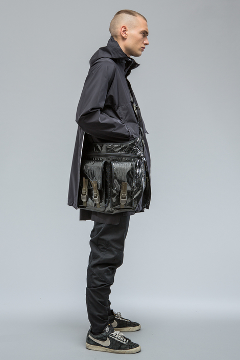
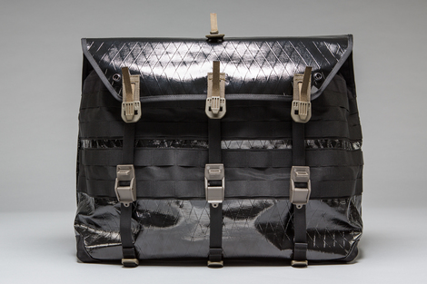
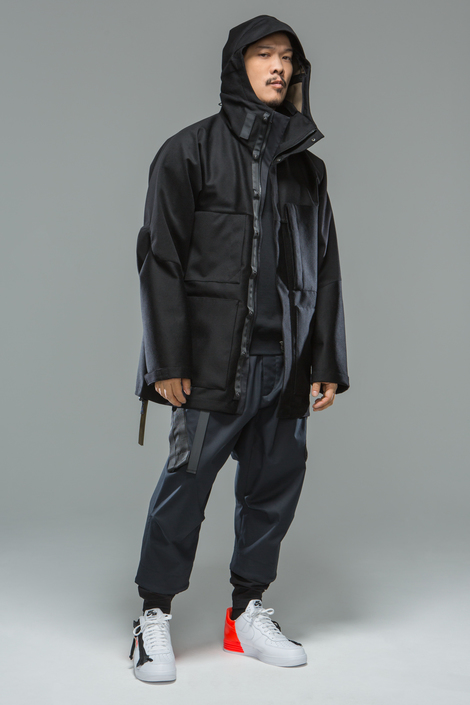
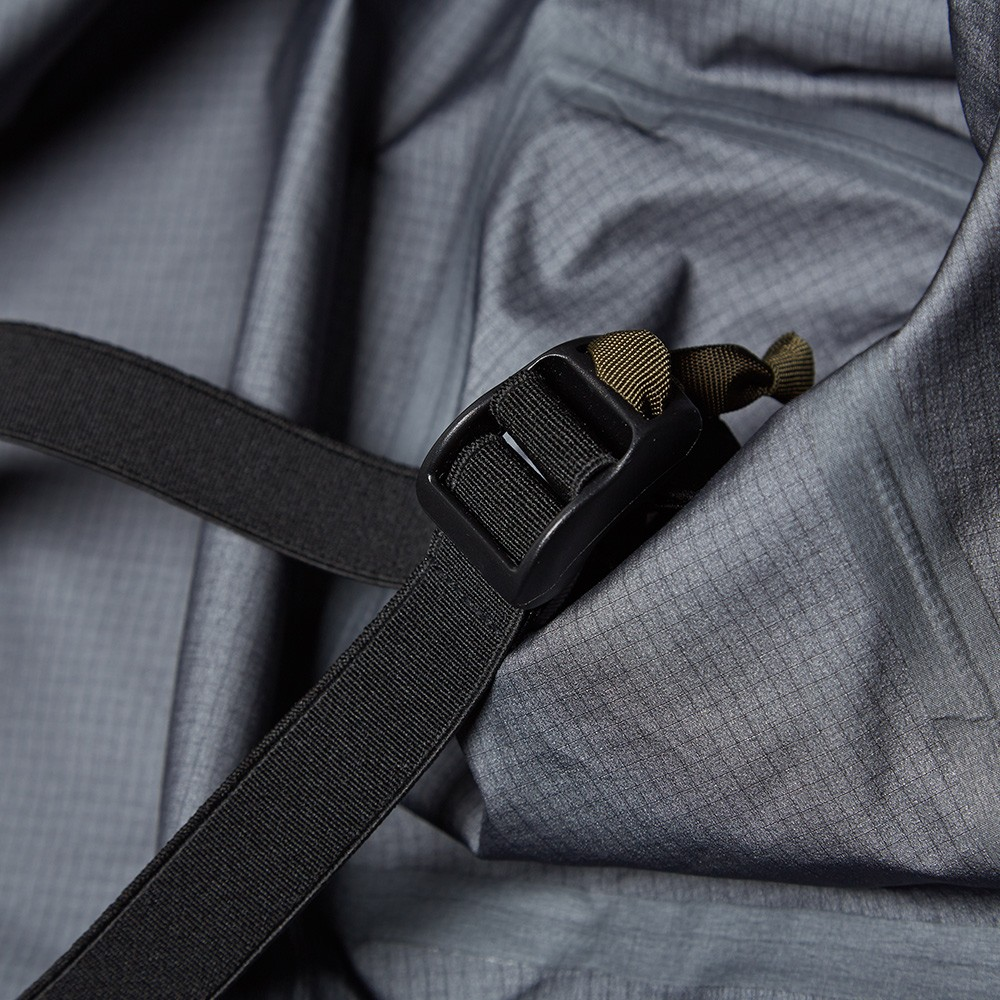
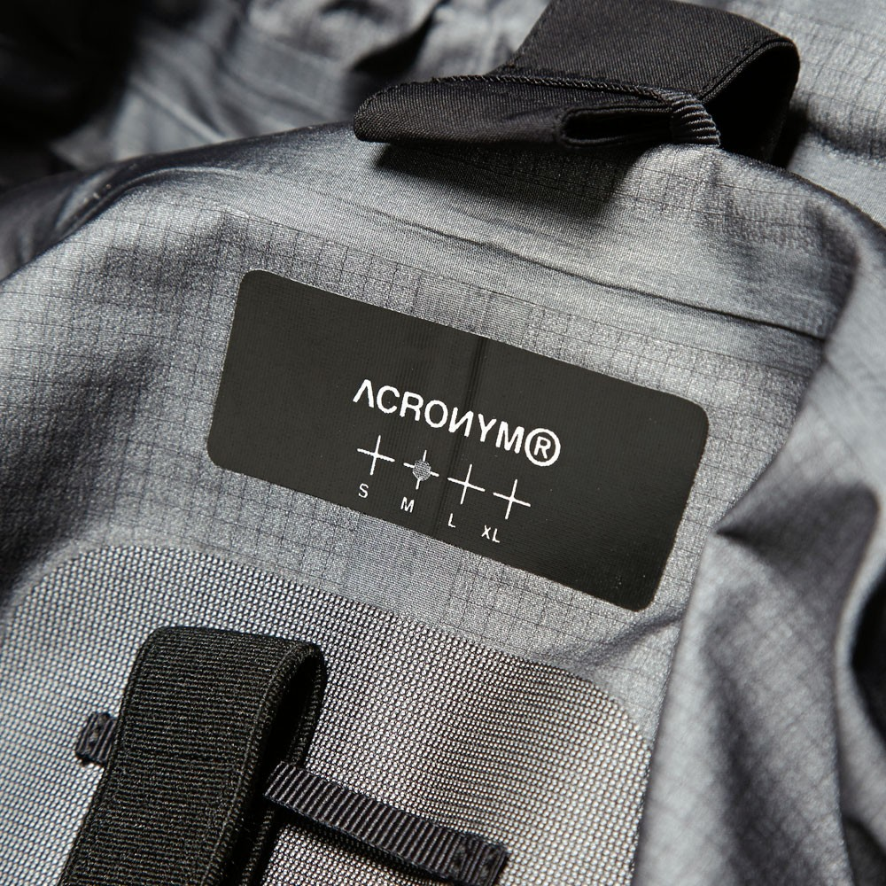

ACRONYM
Back for the new season, ACRONYM combine utilitarian silhouettes with unparalleled functionality and adaptability. Designed by the enigmatic Errolson Hugh, the brand has garnered a real cult following by way of their closely guarded releases and an alignment to a some of the outerwear world’s most innovative brands. This alignment has seen the Berlin-based brand team up with END. newcomer Nemen to produce an inspired capsule collection that channels the aesthetic of both brands.




